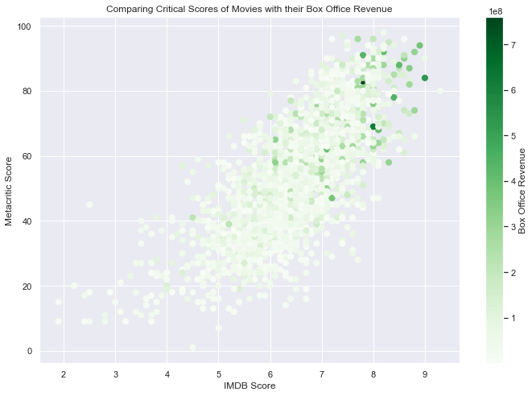

hw-03: Interactive Webpage, and Marks & Channels

Marks
- Areas denote the states.
- A line denotes the total electoral college votes.
- A point denotes the winning threshold on the line.
- Points denote the electoral votes of Nebraska and Maine.
Channels
-
Color for the party that would win the state, or striped of the state is divided. This
is a good choice because color clearly shows the distribution of two possible major
parties.
-
Length of color on the line based on amount of electoral votes the party would get. This
is a good choice because it clearly indicates the margin that either candidate won by.
-
Shape for the triangle denotes winning threshold on line. This is an ok choice. A
vertical line would have been a more clear indicator.
-
Shape for the squares represents electoral votes. This is a good choice because it's a
relatively simple shape.
Colors
-
Categorical red and blue colormap indicating red for Republican and blue for Democrat.
Again, this is a good choice because the two colors clearly indicate the two major USA
political parties.
Marks
- Points denote batted balls.
- Lines classify angles.
- Lines indicate scoring values as a legend.
Channels
-
Color denotes the scoring value of the ball. This is a good choice because a spectrum of
color directs the eye towards extremes of note.
-
Position denotes the launch angle and the exit velocity. This is a good choice because
it clearly maps batted in relation to each other based on two variables in an x-y
coordinate plane.
-
Position denotes the threshold for classifying angles (e.g. groundballs below 10
degrees. This is a good choice because the y intercept of the horizontal lines clearly
divides the lanuch angles into an "above" and "below" category.
Colors
-
Divergent purple to orange colormap indicates below average for purple, average for
white, and above average for orange. This is a good choice because divergent colormaps
allow for comparison of magnitudes above or below and average

Marks
- Points represent movies.
- A line indcates the box office revenue as a legend.
Channels
-
Position of points (movies) represent their IMDB and metacritic scores. This is a good
choice because it cleary indicates how a movie scores.
-
Color of the points (movies) represent the revenue generated for a movie. This is a good
choice because it draws the viewers eyes towards notable points.
Colors
-
Divergent white to green colormap indicates the revenue generated for a movie. The
darker shades of green represent higher revenue movies. This is a good choice because
divergent colormaps allow for comparison of magnitudes and clearly indicate points of
interest.